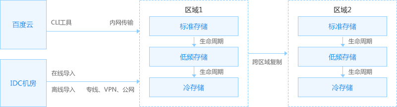
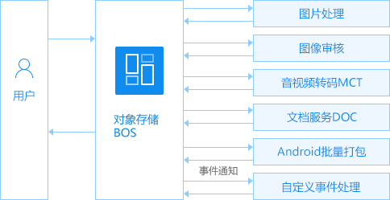

冷存储正式发布，适用于备份、归档等业务场景，价格低至 ¥0.048/GB/月
BOS存储包震撼上线，预付费全新选择！
百度对象存储BOS(Baidu Object Storage)提供稳定、安全、高效以及高扩展存储服务。“存储+计算框架”让您的数据加上“动力”引擎，让数据在传输，存储，处理，发布4个环节有机融为一体。

不同类型数据的使用方式、访问频率均有不同，同时数据也存在老化曲线。随着数据逐渐老化，其访问频率逐步降低，进入归档状态。 
|
数据 | 本地数据上云如果您有大量数据在本地，希望备份或迁移到BOS，推荐使用离线导入 + CLI工具的方案。 离线导入是一种TB级数据传输解决方案，通过硬盘存储设备拷贝数据后邮寄给百度云，可以轻松将海量数据导入到BOS；CLI工具是百度云提供的命令行工具。 第三方数据上云如果您有大量数据在第三方云存储，希望备份或迁移到BOS，推荐使用在线导入（敬请期待） + Bucket镜像方案。 在线导入即将发布，在此之前如果您有大量数据存放在第三方云存储需要迁移到BOS，请工单联系我们；Bucket镜像通过配置回源地址实现无缝数据热迁移。 多种写入API针对不同写入场景，BOS提供了丰富的写入API：简单上传（PutObject）、表单上传（PostObject）、断点续传上传（MultipartUpload）、追加上传（AppendObject）、第三方资源抓取（FetchObject）。 AWS S3兼容为了使众多基于AWS S3开发的应用程序、SDK、及第三方服务在不修改代码的前提下接入BOS，同时也为了支持更多的基于AWS S3的开源应用，BOS兼容了AWS S3接口。现在您可以通过Hadoop S3A配置BOS作为Hadoop集群的后端存储，也可以利用类似CloudBerry Explorer for Amazon S3这样的图形化工具管理BOS上的资源。 |
数据 | 数据管理 |
数据 | Bucket权限您可以通过设置Bucket权限来控制谁能够访问您的资源。Bucket权限设置还提供Referer防盗链功能。 多用户访问控制基于多用户访问控制，您可以配置子用户对BOS资源所拥有的操作权限。多用户访问控制常用于企业用户的子账号管理与分权。 STS临时授权STS（Security Token Service）是百度云提供的临时授权服务。通过STS，您可以为第三方用户颁发一个自定义时效和权限的访问凭证。第三方用户可以使用该访问凭证直接调用百度云的API访问百度云资源。 多区域存储您可以根据业务需求选择就近存储区域，减少数据访问延迟。您可以把数据在多区域间进行复制，实现异地容灾。 加密您可以通过HTTPS协议实现传输加密，也可以通过在本地客户端加密保护数据安全。 |
存储 | 使用CDN加速BOSBOS作为海量文件存储源，静态图片、视频文件、下载包、APP更新包等均放在BOS上。通过开启CDN加速并使用BOS作为源站，用户通过CDN节点就近访问文件。 跨域访问通过浏览器访问BOS里的资源经常会碰到跨域访问问题。BOS支持设置跨域访问规则来实现当HTTP请求与资源处于不同域情况下的资源获取。 |
数据 | 图片处理BOS支持图片处理，用户将原始图片上传到BOS上，通过调用简单的RESTful接口，实现对图片的实时处理，如缩略、裁剪、格式转换、旋转、加文字/图片水印。 图像审核图像审核服务可以对您存储在BOS中的图片进行自动的检测和审核，判断指定bucket中的图片是否包含色情、暴恐、政治敏感、广告、恶心不适等不良内容，并给出置信度分值。同时支持智能识别图像质量，包括清晰度和美观度，帮助过滤低质量图片。 音视频转码音视频转码（MCT）为音视频文件提供高质量的转码计算服务，将源音视频文件转码为各种消费设备所需要的媒体文件格式，满足手机、平板、智能电视和PC等多终端播放需求。 文档服务文档服务（DOC）基于百度文库多年积累的文档处理技术，提供office、wps等格式文档的存储、转码、分发能力，同时满足PC、WAP、APP多端的文档在线浏览需求，适用于在线教育、企业网盘等业务场景。 Android批量打包Android批量打包是BOS为游戏发行行业量身定制的解决方案。当游戏发行公司发布新游戏或者重大版本更新时常常需要一次性制作上万个APK渠道包。这个过程费时费力。通过使用本功能，您可以把海量渠道包的制作工作交给BOS，BOS会在后台调度计算资源进行打包。打包完成后我们会向您发送通知消息。 |


对于数据分发，尤其是热点文件（热门视频、游戏更新包等）分发场景，您可以通过配合使用CDN和BOS来应对大流量和高并发。
对象存储BOS + 内容分发CDN

针对数据备份的场景，BOS提供分级存储的解决方案。对于那些需要长期备份同时访问频率很低的数据，可以存放在低频和冷存储。BOS还支持生命周期管理，帮助您自动对冷数据进行下沉。此外BOS还提供多地域支持，用户可以在地域之间进行数据备份，实现异地容灾。

针对大数据场景，从Mapreduce数据处理到建模预测机器学习以及海量数据实时查询，百度云提供了一整套的大数据分析方案。
对象存储BOS + 百度MapReduce BMR +百度机器学习BML + 百度OLAP引擎Palo

BOS提供丰富的数据处理功能。您可以对上传到BOS的图片进行裁剪、旋转、加水印等图片处理，也可以对图片内容进行审核。您还可以对音视频文件、文档文本进行转码播放，以及批量创建Android渠道包。
对象存储BOS + 图片处理 + 图像审核 + 音视频转码MCT + 文档服务DOC + Android批量打包

| 计费项 | 价格单位 | 标准存储 | 低频存储 | 冷存储 | |
|---|---|---|---|---|---|
| 存储费用 | 存储空间 | 元/GB/月 | 0.128 | 0.08 | 0.048 |
| 请求费用 | 读请求次数 | 元/万次 | 0.01 | 0.05 | 0.1 |
| 写请求次数 | 元/万次 | 0.01 | 0.25 | 0.5 | |
| 数据取回 | 元/GB | 免费 | 0.03 | 0.15 | |
| 流量费用 | 内/外网数据流入 | 元/GB | 免费 | ||
| 内网数据流出 | 元/GB | 免费 | |||
| 外网数据流出 | 元/GB | 0.6 | |||
| CDN回源流出 | 元/GB | 0.14 | |||
| 跨区域数据流出 | 元/GB | 0.6 | |||
| 备注 | 1、低频存储的Object最小存储时间为30天；早于30天删除的Object需要补足未满30天的剩余天数的存储费用； 2、冷存储的Object最小存储时间为90天；早于90天删除的Object需要补足未满90天的剩余天数的存储费用。 | ||||
同时，您也可以以预付费的形式购买BOS存储包，抵扣存储费用：
| 计费项 | 包月（元） | 6个月（元） | 12个月（元） |
|---|---|---|---|
| 100GB | 12 | 63 | 115 |
| 500GB | 60 | 318 | 576 |
| 1TB | 121 | 637 | 1152 |
| 2TB | 243 | 1274 | 2304 |
| 10TB | 1216 | 6374 | 11520 |
| 50TB | 6080 | 31872 | 57600 |
| 100TB | 12160 | 63744 | 115200 |
| 200TB | 24320 | 127488 | 230400 |
| 500TB | 60800 | 318720 | 576000 |
备注：存储包仅可用来抵扣“标准存储-占用空间”的费用

拓维信息打造“互联网+教育”生态圈，对象存储BOS支撑了拓维不断增长的高容量存储和高并发业务访问需求

北京弯月亮科技有限公司通过百度稳定可靠的对象存储BOS和内容分发网络CDN，有效提升了用户图片和视频下载速度，节约了用户成本

铃声多多是中国最大的铃声应用,涵盖安卓、苹果、PC三大平台,覆盖上亿用户！通过百度稳定可靠的大容量对象存储BOS产品结合百度CDN使用，可有效提升铃声下载速度，节约用户成本

百度众测平台使用户第一时间体验新产品。对象存储BOS按使用量计费，节约用户的存储成本；高容量和高并发的特性支撑了众测不断增长用户的需求